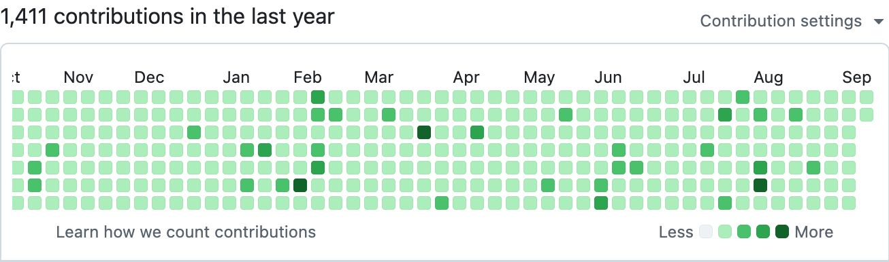

Samuel Marks
#rewriteInC.io
Researching at Stanford Medical School.
A maintainer of Google's LLM training and inference reference JAX library MaxText.
Developer of new C and Python compilers.
Engineered new 1-click cross-platform multicloud Docker-optional deployment scripts.
Organizations

Pinned repositories
All open-source
Python
Compiler
C
Compiler
Python
1.8k
LLMs trained on 51k TPUs
C / Rust / Go / Shell
Cross-platform deploys
1,390 contributions in the last year
Contribution settings
